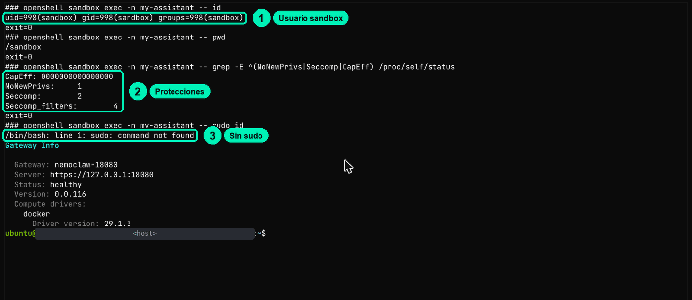
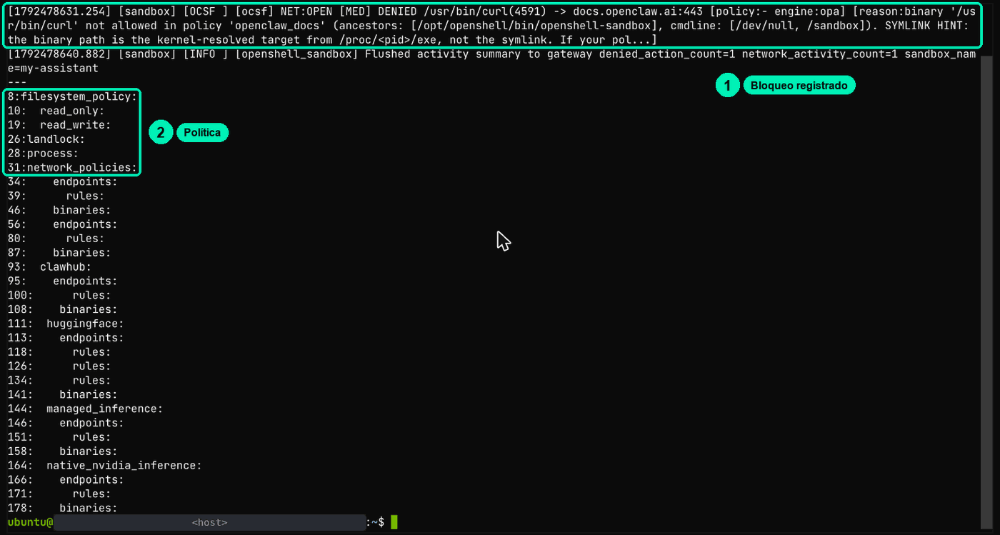
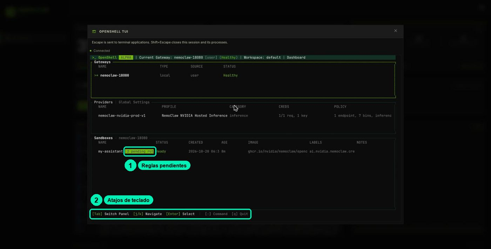
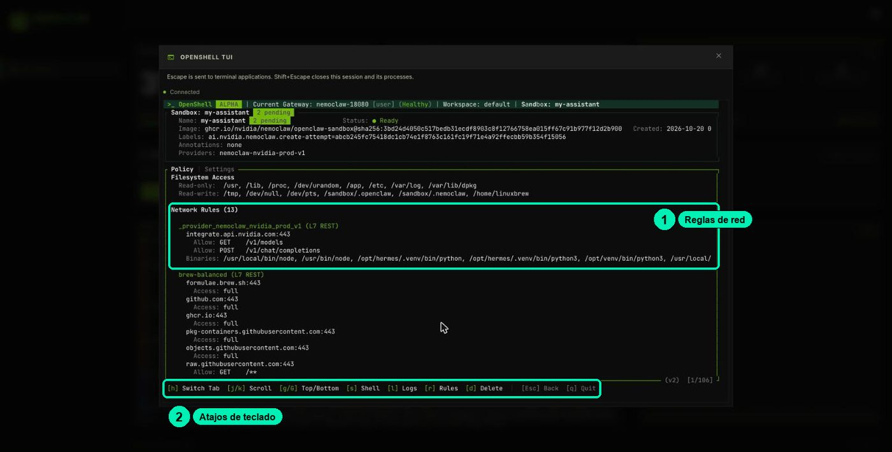

Dentro del sandbox, el agente trabaja como un usuario sin poderes de administrador, y cada programa tiene sus propios permisos para salir a internet: no basta con decir "soy el agente". Tu API key nunca entra al sandbox; adentro solo hay un vale sin valor. Así, aunque alguien engañe al agente, lo que puede lograr es poco.
5.2Identidades y límites con OpenShell
schedule≈9 mincomputerLaboratorio en BrevboltHabilidad: Configurar identidades de agente en OpenShell
auto_awesomeLo esencial
Darle al asistente la llave de su oficina, no la llave maestra del edificio.
mínimo privilegio, Landlock, seccomp y aislamiento de red (los candados del cuarto).
En el tablero de tu laboratorio, haz clic en CHAT WITH AGENT y pregúntale al agente: «¿Con qué usuario de Linux trabajas y en qué carpeta?». Anota su respuesta. Después pídele: «Abre https://docs.openclaw.ai y dime en una línea de qué trata». Anota si dice que lo logró. Vuelve al tablero, haz clic en OPENSHELL TUI, elige my-assistant y presiona Enter: mira la lista de carpetas y reglas de red. Presiona r (Rules) y busca si quedó una petición bloqueada de openclaw_docs. Escribe dos frases: ¿lo que dijo el agente coincide con lo que muestra el panel del guardia? ¿Cuál de los dos es evidencia?
Puedes comprobar por ti mismo, sin creerle al agente, qué tan poco poder tiene y que tu key no está a su alcance.
Esta práctica usa ≈20 min de tu sesión única de laboratorio (≈USD 0.08). Si paras por hoy, haz Stop en la consola de Brev y vuelve pronto; al terminar tu última práctica (la 5.3, o la última opcional que hagas), Delete (ver LABORATORIO.md).
listPaso a paso completo
Todo el detalle, para hacerlo de principio a fin. Si no programas, quédate con «Lo esencial» y vuelve aquí cuando quieras.
Comprueba con evidencia quién es tu agente dentro del sandbox, qué programas pueden salir a la red y dónde está (y dónde no) tu API key.
| Duración del video | ≈9 min |
| Práctica | Laboratorio en Brev: tablero de NemoClaw + terminal del navegador (cookbook.md) |
| Habilidad | Configurar identidades de agente en OpenShell |
Material: diapositivas · cookbook del lab · FAQ del curso
Basado en la lección 04a-safety del curso NVIDIA DLI «NemoClaw» (Apache-2.0).
Lo que vas a lograr
- Demostrar que el agente corre como el usuario
sandbox, sin root, con seccomp activo y sin poder escalar, y compararlo con el poder del operador. - Explicar por qué OpenShell da permisos de red por programa (la ruta real del binario) y no "al agente" en general.
- Comprobar en el registro que una respuesta del agente no prueba que haya tenido acceso.
- Mostrar que la API key real nunca entra al sandbox: adentro solo hay un placeholder.
Antes de empezar
- Tu laboratorio NemoClaw en Brev está encendido y llegaste a su tablero (
https://nemoclaw-<tu-id>.gobrev.dev/dashboard) con el botón verde NemoClaw de la consola de Brev (clase 4.1). - Sabes abrir la VM TERMINAL desde el tablero, hacer clic en el área negra antes de escribir y pegar comandos (ver LABORATORIO.md).
- Tu sandbox se llama
my-assistant(o anotaste el nombre que muestraopenshell sandbox list). - Hiciste tu hoja
trifecta.mden la clase 5.1.
Paso a paso
Parte 1 · Tres identidades distintas
Antes de teclear, ten claro de quién hablamos:
| Identidad | Quién es | Qué poder tiene |
|---|---|---|
| El proceso del agente | El usuario sandbox dentro del contenedor |
Lo que permitan Landlock, seccomp y la política de red |
| El programa (binario) | La ruta real del ejecutable que abre la conexión (/usr/local/bin/openclaw, /usr/local/bin/node, /usr/bin/curl) |
Los destinos que su grupo de la política le permita |
| El operador | Tú, en la VM TERMINAL, con nemoclaw y openshell |
Cambiar políticas, aprobar salidas, leer el token del gateway |
Parte 2 · Dos terminales, dos poderes
El tablero tiene dos terminales. Una está dentro del cuarto del agente y la otra afuera, donde está el operador.
- En el tablero, haz clic en SANDBOX TERMINAL. Haz clic dentro del área negra y escribe:
whoami
pwd
id
Ves el mundo como lo ve el agente: usuario sandbox, carpeta /sandbox y uid=998(sandbox) gid=998(sandbox). Ciérrala con Shift + Esc.
- Ahora haz clic en VM TERMINAL y escribe lo mismo:
whoami
id
Aquí eres ubuntu, con uid=1000(ubuntu) y, entre tus grupos, sudo y docker. El operador tiene poder sobre la máquina; el agente no.
- Desde la VM TERMINAL también puedes preguntarle al sandbox sin entrar. Este comando ejecuta
iddentro del cuarto y te trae la respuesta:
openshell sandbox exec -n my-assistant -- id
Deberías ver uid=998(sandbox) gid=998(sandbox).

Después pregúntale al agente lo mismo. En el chat (CHAT WITH AGENT) o con este comando de la VM TERMINAL, que manda un mensaje sin abrir el chat:
nemoclaw my-assistant agent -m "Usa tu herramienta exec para ejecutar whoami y pwd, y dime en una frase qué usuario eres y dónde estás."
Compara su respuesta con lo que viste tú. En una prueba del curso, el agente dijo que trabajaba en /sandbox/.openclaw/workspace, pero afirmó ser el usuario gateway-owner; el usuario real es sandbox. Como operador, verificas lo que el agente dice de sí mismo.
Parte 3 · Lee su autoridad en /proc/self/status
Este comando lee la ficha con la que arrancó el proceso dentro del sandbox. Es una prueba segura: solo lee un archivo.
openshell sandbox exec -n my-assistant -- grep -E '^(Uid|Gid|NoNewPrivs|Seccomp|Seccomp_filters|CapEff|CapBnd)' /proc/self/status
Busca tres líneas: NoNewPrivs: 1, Seccomp: 2 y CapEff: 0000000000000000. Quieren decir: sin privilegios nuevos, con filtro seccomp y sin capacidades de root.
Parte 4 · Intenta escalar (y lee bien el error)
Estos dos comandos intentan volverse administrador desde dentro del sandbox:
openshell sandbox exec -n my-assistant -- sudo id
openshell sandbox exec -n my-assistant -- python3 -c 'import os; os.setuid(0)'
Vas a ver un command not found en el primero y PermissionError: [Errno 1] Operation not permitted en el segundo. Distingue el mensaje:
command not found: la herramienta no existe en la imagen. No prueba ningún límite.Permission denied(EACCES): permisos de archivo o Landlock. Lo ves contouch /usr/local/bin/prueba.Operation not permitted(EPERM): el kernel negó la operación (falta de capacidades o seccomp).
Un fallo por sí solo no identifica el mecanismo. Por eso la Parte 3 lee el estado del proceso. La receta 3 tiene más pruebas para clasificar con esta misma tabla.
Parte 5 · El permiso de red va atado al programa
Le pides a curl, un programa para descargar páginas, que abra la documentación de OpenClaw desde el sandbox:
openshell sandbox exec -n my-assistant -- curl -sS -m 8 -o /dev/null -w 'code=%{http_code}\n' https://docs.openclaw.ai
Vas a ver curl: (56) CONNECT tunnel failed, response 403. Ese 403 lo da el guardia de OpenShell, no el sitio. El destino está en la política (grupo openclaw_docs), pero no para curl. OpenShell identifica al programa por su ruta real (/proc/<pid>/exe), no por el nombre que dice tener. La receta 5 trae intentos de engañar al guardia para que los pruebes tú.
Parte 6 · Una respuesta no es una prueba: lee el registro
Pídele al agente la misma página. Puedes hacerlo en el chat o con este comando:
nemoclaw my-assistant agent -m "Abre https://docs.openclaw.ai y dime en una línea de qué trata la página."
Es muy probable que responda con una frase convincente sobre OpenClaw. Ahora revisa qué pasó de verdad. Este comando busca las últimas negaciones en el registro del laboratorio:
nemoclaw my-assistant logs --tail 300 | grep DENIED | tail -4
En la prueba del curso salieron líneas como esta (recortada):
[sandbox] [OCSF ] [ocsf] NET:OPEN [MED] DENIED /usr/bin/curl(11932) -> docs.openclaw.ai:443 [policy:- engine:opa] [reason:binary '/usr/bin/curl' not allowed in policy 'openclaw_docs' (ancestors: [/usr/bin/bash -> /usr/local/bin/node -> /usr/bin/bash], cmdline: …
… DENIED /usr/local/bin/node(11950) -> docs.openclaw.ai:443 … [reason:binary '/usr/local/bin/node' not allowed in policy 'openclaw_docs' …

Léela así: quién (/usr/bin/curl, y sus procesos padre en ancestors: el agente corre sobre node), a dónde (docs.openclaw.ai:443) y por qué (ese programa no está en openclaw_docs). El agente intentó con curl y luego con node, y el guardia negó los dos. Aun así respondió, con lo que ya sabía. La lección: una respuesta no prueba que hubo acceso. Lo que prueba es el registro.
Parte 7 · Mira las reglas en el panel del guardia
El botón OPENSHELL TUI del tablero abre el panel del guardia en modo texto. Es la forma visual de ver las reglas.
- En el tablero, haz clic en OPENSHELL TUI.
- En la pantalla principal, muévete con j y k hasta
my-assistanty presiona Enter. (Tab cambia de panel, q sale.)

- En la vista del sandbox ves las carpetas de solo lectura y de lectura y escritura, y las reglas de red. h cambia de pestaña y l muestra el registro.

- Presiona r (Rules). Ahí aparecen las peticiones bloqueadas que esperan decisión, como la de
openclaw_docsconcurl. Hoy solo míralas: aprobar o rechazar lo haces en la clase 5.3.
No presiones d en la vista del sandbox: es Delete y borra el sandbox. Para salir del panel, presiona q.
Parte 8 · Busca tu API key dentro del sandbox
Este comando muestra los nombres de las variables con "key" o "token" y tapa sus valores, salvo el placeholder:
openshell sandbox exec -n my-assistant -- sh -c 'env | grep -iE "key|token" | sed -E "s/=(openshell:resolve:env:).*/=\1…/; t; s/=.*/=<oculto>/"'
Entre las líneas vas a ver NVIDIA_INFERENCE_API_KEY=openshell:resolve:env:… y OPENCLAW_GATEWAY_TOKEN=<oculto>. La primera no es tu key: es un vale. La key real vive en el gateway de OpenShell, afuera del sandbox. El guardia cambia el vale por la key solo cuando la petición sale por la ruta permitida hacia NVIDIA. Si el agente imprime esa variable o la manda a otro lado, lo que filtra es un texto sin valor. La segunda sí es un secreto real (el token del gateway de OpenClaw): por eso el filtro lo tapa.
Para confirmar que ninguna key nvapi- quedó escrita en el sandbox, cuenta los archivos que la contienen. Deberías ver 0:
openshell sandbox exec -n my-assistant -- sh -c 'grep -rIl "nvapi-" /sandbox 2>/dev/null | wc -l'
Nunca corras env sin filtro, ni en la SANDBOX TERMINAL: imprime el token del gateway.
Comprueba que funcionó
- ☐ En la SANDBOX TERMINAL eres
sandboxen/sandbox; en la VM TERMINAL eresubuntu, con los grupossudoydocker. - ☐
/proc/self/statusmuestraNoNewPrivs: 1,Seccomp: 2yCapEffen ceros. - ☐
sudo idyos.setuid(0)fallan, y sabes qué significa cada mensaje. - ☐
curladocs.openclaw.aidaCONNECT tunnel failed, response 403. - ☐ Encontraste en el registro las líneas
DENIEDdel agente, aunque él haya respondido. - ☐ Viste las reglas de
my-assistanten la OPENSHELL TUI. - ☐ Dentro del sandbox no hay ninguna
nvapi-: solo el placeholderopenshell:resolve:env:….
Errores comunes
| Síntoma | Causa | Solución |
|---|---|---|
| Escribes en la terminal y no pasa nada, o se abre otra cosa | La terminal no tiene el foco y las teclas van al tablero | Haz clic dentro del área negra antes de escribir |
ExperimentalWarning: SQLite is an experimental feature |
Aviso de todos los comandos nemoclaw |
Ignóralo: no es un error |
curl: (56) CONNECT tunnel failed, response 403 |
La política negó la conexión (host o programa no permitidos). Es lo esperado en la Parte 5 | No es un problema de TLS. Mira el motivo con nemoclaw my-assistant logs --tail 300 \| grep DENIED \| tail -4 |
| El agente respondió y no ves ninguna negación | Buscaste en pocas líneas del registro | Usa --tail 300 y filtra con grep DENIED. Si no hay ninguna, anota que el agente no intentó salir |
whoami dice ubuntu |
Estás en la VM TERMINAL, no dentro del sandbox | Usa la SANDBOX TERMINAL o openshell sandbox exec -n my-assistant -- … |
whoami dice root |
Usaste docker exec sobre el contenedor (corre como root) |
Usa openshell sandbox exec -n … o nemoclaw my-assistant exec -- … |
Un comando con tubería (grep … \| wc) se ejecuta en el host |
openshell sandbox exec recibe argumentos, no una línea de shell |
Envuelve el comando completo en -- sh -c '…' |
No aparece ninguna variable …KEY en la Parte 8 |
Sandbox creado con la ruta inference.local: no recibe ni el placeholder |
Es normal. La key tampoco está adentro |
| Error de sandbox no encontrado | Nombre mal escrito (por ejemplo, mi-asistente) |
Copia el nombre exacto de openshell sandbox list |
Reto
Encuentra un destino que tu política permita para curl y otro que le niegue, usando solo comandos de lectura y la OPENSHELL TUI para ver las reglas. Pista: prueba https://integrate.api.nvidia.com/v1/models y https://docs.openclaw.ai. Criterio de éxito: dos comandos curl desde el sandbox, uno con code=200 y otro con CONNECT tunnel failed, response 403, y una frase que explique la diferencia (lo verás a fondo en la 5.3).
Avance del proyecto
Agrega a tu trifecta.md de Soporte NemoClaw una sección "Identidad" con lo que comprobaste:
## Identidad (clase 5.2)
- Corre como: sandbox (uid 998), NoNewPrivs 1, Seccomp 2, CapEff 0
- El operador (ubuntu) tiene sudo y docker; el agente no
- Programas que el agente usa para salir a la red: /usr/local/bin/node (y curl desde sus herramientas)
- En el lab, docs.openclaw.ai se negó a curl y a node, y el agente respondió igual: verificar en el registro
- Dónde vive la API key: gateway de OpenShell (afuera). En el sandbox: openshell:resolve:env:…
- Riesgo que queda: el token del gateway de OpenClaw (OPENCLAW_GATEWAY_TOKEN) sí está dentro del sandbox
En la clase 5.3 vas a leer la política completa y a escribir el preset del proyecto.
Recursos
- NVIDIA DLI · lección 04a «El sandbox de OpenShell» del curso «NemoClaw» (Apache-2.0).
- NemoClaw · Security Best Practices → "Binary-Scoped Endpoint Rules" (identificación por
/proc/<pid>/exey hash SHA256). - NemoClaw · Credential Storage (
docs/security/credential-storage.mdx): placeholdersopenshell:resolve:env:<KEY>. - NemoClaw · Process Controls (
docs/security/process-controls.mdx):no-new-privileges, capacidades,ulimit -u 512. - Kernel de Linux · seccomp filter · man7 · capabilities(7).
- LABORATORIO.md: el tablero y sus cuatro botones.
- FAQ del curso.